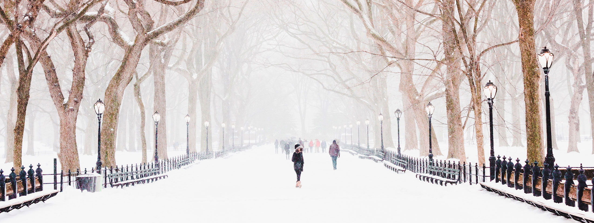

EMMA WATSON
Website For Fans
About Emma Watson
5'5″ (1.68 m)
April 15, 1990 (Aries), Paris, France
Dragon School (Oxford), Headington School (Oxford), Brown University- Literature Degree (Providence, USA), Worcester College (Oxford)
Actress (since 1999), model, social activist
Leo Robinton
Spiritual universalist
Instagram, Twitter, Facebook
Emma Watson, to give her real name Emma Charlotte Duerre Watson was born to a married couple of British attorneys named Jacqueline Lues and Chris Watson in Paris, France. Her paternal grandmother gave her the name Duerre as her middle initial. Emma was born in Paris and lived there until she turned five years old when her parents filed a divorce, and her mother took her to England, Oxford.
She attended the Dragon School in Oxford and studied there till 2003. Emma realized she wanted to be an actor when she was six years old. She attended Stagecoach Theatre Arts, an extracurricular theatre institution where she learned vocals, choreography, and acting. At the age of seven, Emma won a poem recitation competition and discovered her innate talent for performing. Before the Harry Potter franchise, she had never performed commercially. Watson transferred to Headington School after attending the Dragon School.
Jacqueline Luesby and Chris Watson, both English attorneys, are her parents. Giving her a British background, she would require for Harry Potter role. Alex, her younger brother, was conceived three years later. When Watsons parents split when she was five years old, she relocated to Oxfordshire, UK, with her mom and brother. Her parents were wedded following his divorce, and her siblings were born into their new relationship. Emma is the eldest of seven kids, with her younger brother Alex, two half-maternal brothers, and three half-brothers from her dads subsequent marriage completing out the family.
Watson, who had previously mainly performed in school plays, was cast as Hermione when she was nine years old. Watson tried out for the part that would bring her to worldwide fame eight times. Rowling, who was heavily involved in the filmmaking process to ensure that it kept faithful to the books, wanted Watson to be a part of it. Rowling has been a fan of Watson since her first screen test. Watson kept busy filming the Harry Potter series for the following decade. She remained in the eight-part series until the last film, Harry Potter and the Deathly Hallows: Part 2, in 2011. She and her co-stars were schooled for four or five hours per day while on production. Watson passed all of her post-secondary examinations with excellent grades.
The actress avoids discussing her intimate life to save her relationships from being pushed away by the paparazzi. Despite this, certain details about her romances were leaked to the media. Emma Watson revealed that she fell in love with her colleague Tom Felton when she was ten years old. Emma told in early interviews that she had a crush on Prince Harry when she was young. She has been dating Leo Robinton, an American businessman, since 2019. Watson isnt betrothed to Robinton right now, but she intends to have a long-term relationship with him and name him as her husband.